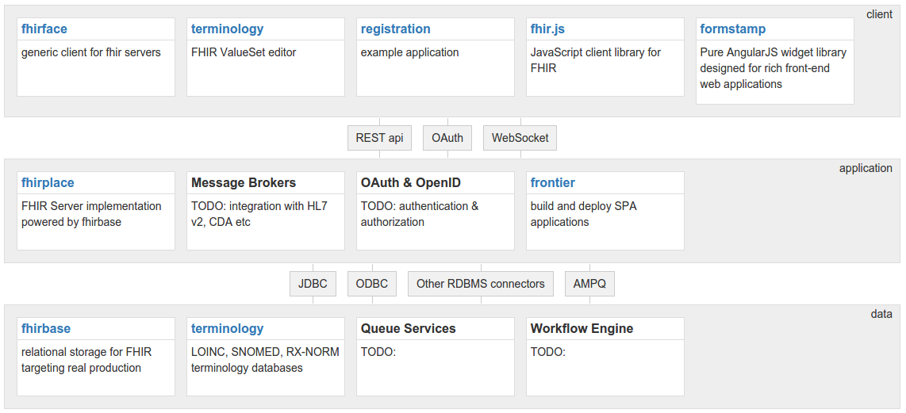

Pavel Smirnov
PM with Health Samurai
PM with Health Samurai
Healthcare IT team within WaveAccess
(818)731-1279
Health Samurai
looking for simplicity in a complex domain
Press down for details about the team and right to learn more about Health Samurai business propositon
Our Core Values
- we value professionalism and education
- we like open source
- we are fanatics of quality and standards
- we are constantly improving our processes and technologies to solve more and more complex problems
What we've done
- MedClient - cloud based Electronic Health Record system for Choice Hospital Systems
- fhirbase - is an open source stack for Health IT application development based on FHIR standard
- formstamp - open source widget set for AngularJs applications
- foodtaster - open source library for test driven devops (Chef & Vagrant)
Technical Stack
- Linux (operating system)
- PostgreSQL (open source database)
- Ruby & Ruby On Rails - efficient web development stack
- AngularJs - google open source MVVM framework for interactive front-end applications
- other front-end libraries: twitter bootstrap, d3, bower, node, npm, less, coffeescript etc
- Clojure, a perfect pragmatic choice between quick development, enterprise java infrastructure and formal academic power
- Chef, Vagrant & Sensu (for infrastructure as a code)
- Amazon AWS, a source of compute and storage power
Development methodologies
- agile development methods: backlog, scrum (meetings), pair programming, user stories etc
- Continuous Delivery
- Test Driven Development & Continuous Integration
- DevOps (infrastructure as a code)
- rapid prototyping
- lean customer development
Development Tools
- github - source control
- teamcity - continuous integration (deployment) server
- redmine - issue tracker
- selenium - web browser automated testing
- new relic - web traffic performance monitoring
- chef - infrastructure management
- sensu - monitoring
- balsamic, mind mapping and other tools for customer development, UX testing etc
Security Measures
- AWS hosting is HIPAA compliant
- no protected health information (PHI) stored on local devices
- data-at-rest is encrypted, SSL encryption of data-in-transit
- biometric authentication of users when applicable
- comprehensive audit log and monitoring tools
- We educate our users. Security measures built into a product have to be supplemented by an organization culture and policies
The problem we address
Current EHRs are huge monolithic systems with limited customization and interoperability
Health Samurai solution
A platform (paas) and an app store with modern web and mobile applications built on top of the centralized FHIR server
Fast
Healthcare
Interoperability
Resources
... is the next generation standard
for exchanging healthcare information electronically
Why FHIR?
- utilizes best practises and targets implementers and web technologies
- supports common scenarios but provides with documented extensibility
- freely available (CC0 license)
- great growing community
FHIRbase
... is an open source stack for
Health IT application development based on FHIR standard
fhirbase components
fhirbase storage
- stores resources relationally and provides with the power of SQL for querying & aggregating
- provides with a set of procedures & views to persist and retrieve resources as json documents
fhirbase roadmap

Contact Health Samurai today
(818) 731-1279
or view samples of problems Health Samurai will solve for you better than anybody else
Reveal.js
The HTML Presentation Framework
Created by Hakim El Hattab / @hakimel
Hello There
reveal.js enables you to create beautiful interactive slide decks using HTML. This presentation will show you examples of what it can do.
Vertical Slides
Slides can be nested inside of each other.
Use the Space key to navigate through all slides.
Basement Level 1
Nested slides are useful for adding additional detail underneath a high level horizontal slide.
Basement Level 2
That's it, time to go back up.
Slides
Not a coder? Not a problem. There's a fully-featured visual editor for authoring these, try it out at http://slides.com.
Point of View
Press ESC to enter the slide overview.
Hold down alt and click on any element to zoom in on it using zoom.js. Alt + click anywhere to zoom back out.
Touch Optimized
Presentations look great on touch devices, like mobile phones and tablets. Simply swipe through your slides.
Fragments
Hit the next arrow...
... to step through ...
... a fragmented slide.
Fragment Styles
There's different types of fragments, like:
grow
shrink
fade-out
current-visible
highlight-red
highlight-blue
Transition Styles
You can select from different transitions, like:
None -
Fade -
Slide -
Convex -
Concave -
Zoom
Themes
reveal.js comes with a few themes built in:
Black (default) -
White -
League -
Sky -
Beige -
Simple
Serif -
Blood -
Night -
Moon -
Solarized
Slide Backgrounds
Set data-background="#dddddd" on a slide to change the background color. All CSS color formats are supported.
Image Backgrounds
<section data-background="image.png">Tiled Backgrounds
<section data-background="image.png" data-background-repeat="repeat" data-background-size="100px">Video Backgrounds
<section data-background-video="video.mp4,video.webm">... and GIFs!
Background Transitions
Different background transitions are available via the backgroundTransition option. This one's called "zoom".
Reveal.configure({ backgroundTransition: 'zoom' })Background Transitions
You can override background transitions per-slide.
<section data-background-transition="zoom">Pretty Code
function linkify( selector ) {
if( supports3DTransforms ) {
var nodes = document.querySelectorAll( selector );
for( var i = 0, len = nodes.length; i < len; i++ ) {
var node = nodes[i];
if( !node.className ) {
node.className += ' roll';
}
}
}
}
Code syntax highlighting courtesy of highlight.js.
Marvelous List
- No order here
- Or here
- Or here
- Or here
Fantastic Ordered List
- One is smaller than...
- Two is smaller than...
- Three!
Tabular Tables
| Item | Value | Quantity |
|---|---|---|
| Apples | $1 | 7 |
| Lemonade | $2 | 18 |
| Bread | $3 | 2 |
Clever Quotes
These guys come in two forms, inline:
“The nice thing about standards is that there are so many to choose from”
and block:
“For years there has been a theory that millions of monkeys typing at random on millions of typewriters would reproduce the entire works of Shakespeare. The Internet has proven this theory to be untrue.”
Intergalactic Interconnections
You can link between slides internally, like this.
Speaker View
There's a speaker view. It includes a timer, preview of the upcoming slide as well as your speaker notes.
Press the S key to try it out.
Export to PDF
Presentations can be exported to PDF, here's an example:
Global State
Set data-state="something" on a slide and "something"
will be added as a class to the document element when the slide is open. This lets you
apply broader style changes, like switching the page background.
State Events
Additionally custom events can be triggered on a per slide basis by binding to the data-state name.
Reveal.addEventListener( 'customevent', function() {
console.log( '"customevent" has fired' );
} );
Take a Moment
Press B or . on your keyboard to pause the presentation. This is helpful when you're on stage and want to take distracting slides off the screen.
Much more
- Right-to-left support
- Extensive JavaScript API
- Auto-progression
- Parallax backgrounds
- Custom keyboard bindings